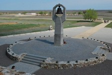
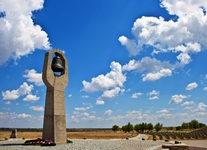
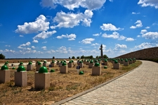
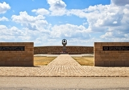
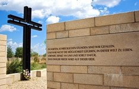
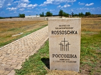

В Городищенском районе находится необычная историческая достопримечательность Волгоградской области - военно-мемориальное кладбище Россошки. Мало кто слышал о нем, а те, кому удалось побывать в этом месте, надолго запомнят его. Хотя данный мемориал находится на отдалении от трассы М6 «Каспий», тем не менее все, кто интересуется историей Великой отечественной войны, просто обязаны посетить это место и отдать дань воинам защитившим мир от фашизма.

Военно-мемориальное кладбище в Россошках
Описание
История создания
Военно-мемориальное кладбище Россошки Волгоградской области было образовано в 1992 году на месте двух деревень – Малых и
Больших Россошек. Во время Сталинградской битвы деревни Россошки стали полем боя, на котором было пролито немало крови
немецких и русских солдат.
В декабре 1992 года между Россией и Германией было подписано межправительственне соглашение об уходе за военными могилами,
после чего стало возможно строительство подобного комплекса. В 1994 году Народный Союз Германии по уходу за военными могилами
приступил к строительству кладбища. Открытие кладбища состоялось 15 мая 1999 года.
Изначально в селе Россошки располагалось лишь захоронение немецких солдат, но впоследствии кладбище расширилось,
и его поделили на две части. На левой стороне Россошек покоятся тела советских солдат, погибших в Сталинградскую битву.
Немецкое кладбище
Во время Сталинградской битвы на этом месте располагалось кладбище немецких военнослужащих. Сейчас оно называется старое кладбище. Старое кладбище огорожено гранитными плитами, на них – имена погибших, те, что удалось установить. Рядом со старым немецким кладбищем расположена площадь памяти – небольшая площадка с мемориальным чёрным крестом. Площадь памяти является своеобразным входом в новую часть кладбища. Новое кладбище – это огромная братская могила цилиндрической формы – 150 метров в диаметре, высотой до 3,5 метров. здесь захороняются останки немецких солдат, найденных в Волгоградской и Ростовской областях. Имена, которые удалось установить, заносятся на гранитные плиты на стенах братской могилы. Рядом с братской могилой располагаются гранитные кубы, на которые нанесены имена тех, кто до сих пор считается пропавшим без вести. На 107 кубах более 120 000 имен.
Советское кладбище
Мемориальный комплекс Советским воинам в Россошках был создан по инициативе городищенского районного совета
ветеранов а также при участии поисковой группы «Надежда» в 1997 году.
Официальной датой открытия комплекса является 23 августа – день памяти всех жертв Сталинградской битвы, тогда
здесь были захоронены первые 808 бойцов.
Мемориал Советским воинам расположен по левую сторону от дороги.
Вход в него ограничен двумя стенами-пропилеями.
От входа мощеная брусчаткой дорожка ведет к площади – центру мемориала.
На ней установлена 6-ти метровая бетонная скульптурная композиция «Скорбящая» работы Сергея Щербакова.
«Скорбящая» представляет собой стилизованную фигуру женщины, держащей над головой колокол с вырванным языком.
Слева и справа от центральной площади расположены воинские могилы.
Их число увеличивается с каждым годом.
По состоянию на 2012 год на воинском кладбище советских воинов в
Россошках покоится более 15,5 тысяч бойцов в 34 братских и в более чем 300 именных могилах.
Фотографии
     
Расположение
 )
)
Расположение военно-мемориального кладбища в Россошках на интерактивной карте
Военно-мемориальное кладбище в Россошках находится в Городищенском районе Волгоградской области недалеко от села Россошки.
Как при движении с московского направления, так и при движении со стороны Волгограда по трассе М6, Вам необходимо свернуть по указателям на
Аэропорт.
При движении с московского направления, развилка на аэропорт будет в 15 километрах от Самофаловки.
При движении из Волгограда развилка на аэропорт будет в 10 километрах от поворота на Городище.
После того, как проедите путепровод перед поселком Аэропорт, Вам необходимо свернуть направо, по указателям на поселок
Степной. На повороте на поселок Степной двигайтесь прямо по направлению к селу Россошки.
Приблизительно через 5 километров будет военно-мемориальное кладбище Россошки.
На приведенных картах также отмечен путь с трассы М6 Каспий к Россошкам.
Дополнительная информация
Военно-мемориальный комплекс Россошки всегда открыт, и любой может прийти сюда и почтить память погибших в бою солдат.